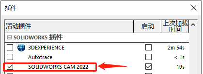

SOLIDWORKS CAM
SOLIDWORKS CAM是作为SOLIDWORKS的插件加载使用。它能实现设计-加工一体的功能，在设计特征发生修改时，其对应的CAM设置也会进行提示更新。
选择SW CAM的原因：
\1. 2.5轴加工简单,手工编程居多
\2. 2.5轴设备价低,用户不愿意再投入高成本软件
\3. 批量重复性生产,代码重用性高,编程人员少
当前SW CAM的不足：
\1. 主要支撑用于2.5轴；
简介
打开插件
勾选启用插件【工具-插件-SOLIDWORKS CAM】，在SOLIDWORKS 插件中，找到SOLIDWORKS CAM 插件，勾选启用。
（如果是需要自启动，则勾选右侧“启动”选项，下次打开SW软件时，插件即会自动加载）
CAM操作界面
特征树：设置零件加工的特征类型，通过策略决定加工生成计划（也就是加工方式）。同个特征可以添加多次加工计划。
加工树：由特征树生成的加工计划会显示在此处，我们需要做的是：设置好加工计划里的加工方式的详细操作。例如，加工进给量F/S，引入/退刀方式等
刀具树：显示现有机床所携带的刀具库。不同的刀具在“加工树”的加工计划设置也不一样的，和加工策略有关。
操作流程
定义机床
选择机床
在使用 SOLIDWORKS CAM 加工零件之前，确保定义您设施中可用的机床。有关详细信息，请参阅 PDF 手册“工艺数据库教程”。
1、标准版只允许使用铣床“Mill Metric”；
2、专业版可以用铣床、车床。“磨”和“车削”机器都可以选择，但请注意，车削只在CAM专业版中可用。
窗口下有当前机床的信息
刀具库
添加工具：
编辑工具：
移除工具
更新工具
保存刀具库
坐标系
编辑定义
这里有两种定义坐标系统的方法，
用户定义
原点：确定坐标点的位置。
1、“实体”：选择零件上可用的点，
2、“零件外围盒顶点”：零件的重心
3、“毛坯外围盒顶点”：毛坯的重心
轴：确定坐标轴的方向
SW坐标系
（前提是要SW特征树要先有“坐标系”的对象特征，才能在SOLIDWORKS坐标系方法里选择到）
坯料（Stock）
毛坯是从中加工零件的材料。默认毛坯为刚好能将零件放入其中的最小矩形（边界框）
材料
毛坯材料（材料来自CAM的数据库，似乎并不是SW的材质库）
毛坯类型
包络块、
预定义的包络块、或者，您可以选择使用预定义的边框，选择一个草图并挤压它，
拉伸草图、
圆柱、
STL文件、
零件文件
坐标系
边界框偏移
毛坯尺寸&数量
然后显示库存的总大小下面的“库存大小”区域，并将更新
对于进给量和速度，以确保刀具在铣削过程中不会断裂
设置-铣削设置
生成2.5轴的铣削方向及看粗下来的加工特征
提取加工特征
SOLIDWORKS CAM使用基于特征的加工方法，因此在创建刀具路径之前要确定需要加工的特征。
自动提取特征
使用“提取可加工特征”工具，可以自动提取并加载到SOLIDWoRKS CAM特征树中。这可以帮助您确定需要多少个设置，这对计算成本很有用。
你可以看到这里有“提取可加工特征”的选项。当你点击“提取可加工特征”时，选择这些选项中的任何一个都会生成指定的选项。
手动提取特征
自动特征识别是开始定义零件可加工特征的好方法，但它并不完美。它偶尔会漏掉一些特征，实际上无法识别一些通常用三轴加工操作加工的特征。
在这些情况下，需要使用交互式特征识别手动定义特征。
生成操作计划
有些特征需要多次操作才能完成，而工具大小等默认设置，进给量、速度和机器策略由技术数据库控制
（备注：显示操作名称和所选工具，并显示为蓝色，表示它们还没有工具路径。）
此外，每个操作都可以展开以显示其创建的特性以及加工策略。
鼠标悬停或选择某个操作将在图形区显示该操作的信息，
生成刀具轨迹
模拟刀具轨迹
一旦创建了工具路径，您可以通过模拟它们来更好地理解它们的加工状态。
刀具路径开始从图形区域的零件中加工零件
我可以用这里的滑块改变动画的速度，暂停动画，
使用这里的配对选项一步一步地通过工具路径动画，或者将动画重置回起始点。
这里的下拉菜单将决定动画何时自动暂停，以便您进一步分析过程。
你也可以将“模式”从“工具模式”改为“涡轮模式”，当你点击播放时，它会立即跳到最后。
下面的显示选项改变了目标和坯料在图形区的显示方式，
碰撞模拟？
定义包含区域包含区域将工具路径限制在选定的区域。它们通常与回避一起使用
特征识别
-零件周界特征
-2.5铣削特征类型：
所选择的功能部件类型控制为功能部件生成的操作，并影响最终的工具路径。要了解更多关于可以交互式插入的不同类型的2.5特性的详细信息，请阅读主题:2.5轴特性类型
以下是可以交互插入的2.5轴特性类型：
-凹腔(长方形凹腔，圆形凹腔，不规则凹腔，圆形凹腔)
-插槽(矩形槽，矩形角槽，不规则槽，不规则角槽)
-角槽
-凸台(矩形凸台，圆形凸台，不规则凸台，圆形凸台)
- 孔
-开放式凹腔
-面部特征
-开放式轮廓
选取边线轮廓，定义走刀的移动。
-雕刻特征
雕刻是走的草图线条的范围，而不是面区域
-曲线特征
圆角加工：
倒角加工：
倒角加工特征需要是“轮廓铣削”的加工方式，刀具需要选择具有斜面的倒角刀，并在“轮廓”设置勾选“倒角加工”。倒角加工里需设置长度&间隙，这两者决定了倒角切入的大小。
2.5轴铣削操作
3轴铣削操作
孔加工操作
车削操作
插入深查操作
保存操作计划
默认待征策略
基于公差的加工
具有紧公差的 3D 模型需要加工到公差均值，因此对于 CNC 编程人员来说，这种模型加工起来非常棘手。为此类零件生成 CNC 程序的过程非常耗时
窗口
工艺数据库
技术数据库(简称TechDB)是一个专有数据库，是SOLIDWORKS CAM加工自动化背后的智能。利用技术数据库中保存的基于知识的加工工艺、刀具细节、切削条件和操作默认值，自动生成加工操作和刀具路径。这样的存储库确保了生成的工具路径的一致性和质量。
消息窗口
进程管理器
自定义刀具/刀夹
CAM NC 编辑器
创建库对象
插入库对象
发布eDrawings
CAM选项
常规
铣削特征
显示
模拟
更新
文件位置
加工策略设置
修改导入参数
当使用轮廓操作来完成一个零件时，刀具进入材料的方式会影响最终产品的清洁程度。因此，引入选项卡与轮廓选项卡参数一起使用
你可以看到它并没有立即跟随曲线，而是移动到曲线里面。
在我开始调整引线之前，我将检查“将引线/引出全部”选项，以便我在这里所做的任何更改都将反映在所有操作中
修改轮廓操作参数
加工凹腔的操作分为两种类型的操作：粗加工和轮廓加工（Rough&Finish）
它们是相似的，有相似的操作参数，一个轮廓操作是用来，完成一个零件，并利用其操作参数的轮廓和引线表
“粗加工”选项卡已经被“轮廓”选项卡取代，新的“铅”选项卡也有
就像“粗糙”选项卡一样，我在这里有控制深度和侧面参数的选项，
修改粗加工参数。
虽然这些会给你一个很好的开始，但它们并不总是适合你所需要的。
操作的原始参数基于Technology Database信息，但可以调整以自定义每个操作
一般操作
一般操作流程参考
后置处理器
提供生成 NC 程序所需的信息。这些参数取决于机床，并且可能为您的控制器显示不同的参数。
“机器”对话框的“后期处理器”页签允许您选择后期处理的后期处理器或输出可由外部第三方后期处理程序使用的增强型CL文件。“机器”对话框的“后期处理器”页签允许您选择用于后期处理的后期处理器或输出可由外部第三方后期处理程序使用的增强型CL文件
后置处理器用于将这里创建的输出代码匹配到特定的机器，
后处理器的文件（ctl）可以填入多款机器型号，并保留成模板文件。
记录
控制用于生成NC程序的机器相关参数。
“定义冷却剂”和“定义工具直径和长度偏移量”参数通常是必需的，也是目前唯一显示的，
但请注意，如果控制器或后处理器需要，可能会显示额外的参数
设置
旋转轴
（旋转轴和倾斜轴是4，5轴时使用，默认是灰色不可用的）
倾斜轴
（旋转轴和倾斜轴是4，5轴时使用，默认是灰色不可用的）
单步（步进）刀具轨迹
“步进工具路径”命令允许您步进工具路径。
通过单击“遍历工具路径”对话框中的适用按钮，您可以在工具路径中前进或后退一步，每次一条记录，一次一个特征工具路径，转到工具路径的末尾或开头。您还可以在整个工具路径上连续地绘制工具的backplot，并设置在任何时间点显示的领先和尾随CL记录的数量。
保存刀位文件
后处理
后处理是SOLIDWORKS CAM流程的最后一步，它将根据刀具路径和操作信息生成代码。
排序操作
操作在CAM操作树中出现的顺序就是它们被加工的顺序，因此对加工过程的效率有很大的影响。
此代码可以是用于特定机器的NC程序文件的形式。
或者一般的APT CL文件，以后可以用外部程序为特定的机器处理。
生成的文件类型取决于定义机器时选择的后处理器，并且可以很容易地更改为多台机器快速输出相同的代码。在这节课中，我将向您展示如何使用SOLIDWORKS CAM内部后处理器为一台机器生成NC程序文件
因为我想在CAM中处理代码，当我产生它时，我将进入机器对话框，
然后首先提示我选择一个保存输出文件的位置。因为我使用的是内部后期处理器，我实际上是在为两个文件设置位置，
稍后处理的代码将显示在下面的NC代码窗口中，但请注意，如果您使用“快速”按钮进行处理，
如果我打算使用外部后期处理器，我可以在这里选择“APT CL”复选框，
“排序操作”命令允许您根据用户定义的排序规则对逻辑加工序列中的操作进行排序。
处理：
“排序操作”对话框中的“流程”选项卡上的选项允许您建立排序操作的规则。这些选项与Sort选项卡上指定的条件一起使用。
排序
排序操作”对话框中的“排序”选项卡提供了基于操作类型和工具进行排序的选项。
组合操作
在这节课中，我将向您展示如何组合和链接操作，以帮助简化和优化您的工具路径。
连接操作
操作可以在以下情况下进行链接（关键在特征要相同）:
1、在装配模式下，在不同的零件上以不同的方向加工相同的特征时，可以将这些特征的操作联系起来，以便在所有零件上加工相同的特征。
2、当在单个零件上加工相似特征时，可以将操作链接起来，以便加工相同的特征。
参考：
铣削装配体教程：
..\SolidWorks 安装位置\SOLIDWORKS CAM\Lang\Chinese\Manuals\ mill_assemblies_tutorial.pdf
铣削教程：
..\SolidWorks 安装位置\SOLIDWORKS CAM\Lang\Chinese\Manuals\mill_tutorial.pdf
设置表教程：
..\SolidWorks 安装位置\SOLIDWORKS CAM\Lang\Chinese\Manuals\setup_sheets_tutorial.pdf
基于公差的价格TBM：
..\SolidWorks 安装位置\SOLIDWORKS CAM\Lang\Chinese\Manuals\tbm_user_guide.pdf
TechDB 设置指南：
..\SolidWorks 安装位置\SOLIDWORKS CAM\Lang\Chinese\Manuals\techdb_settings_guide.pdf
工艺数据库 (TechDB) 教程：
..\SolidWorks 安装位置\SOLIDWORKS CAM\Lang\Chinese\Manuals\technology_database_tutorial.pdf
车削教程：
..\SolidWorks 安装位置\SOLIDWORKS CAM\Lang\Chinese\Manuals\turn_tutorial.pdf